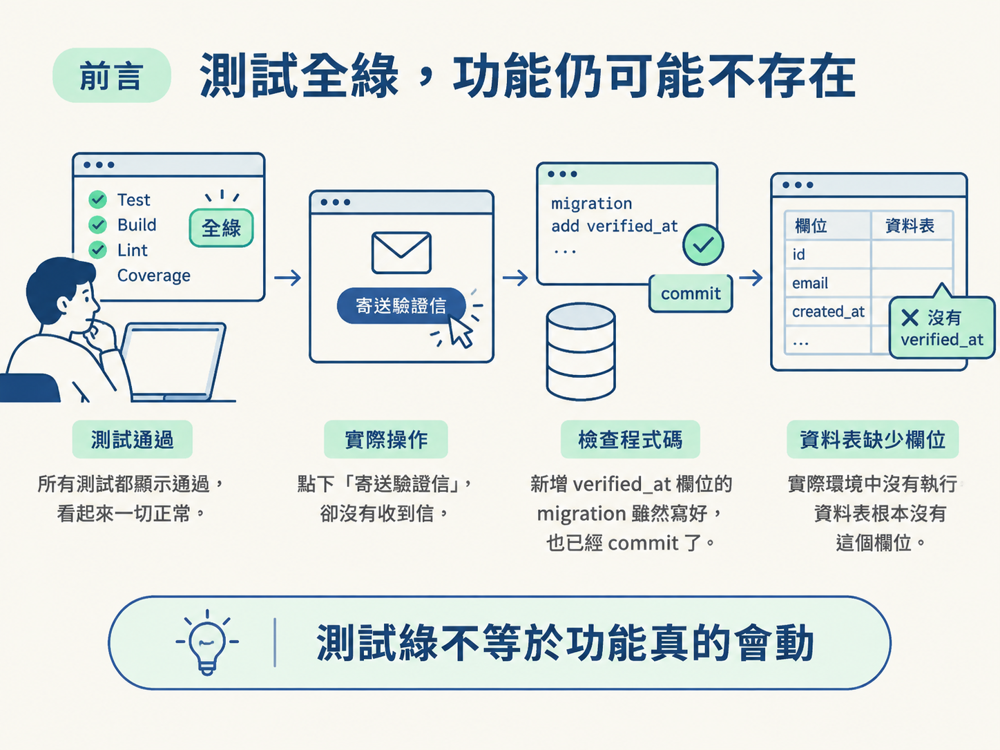
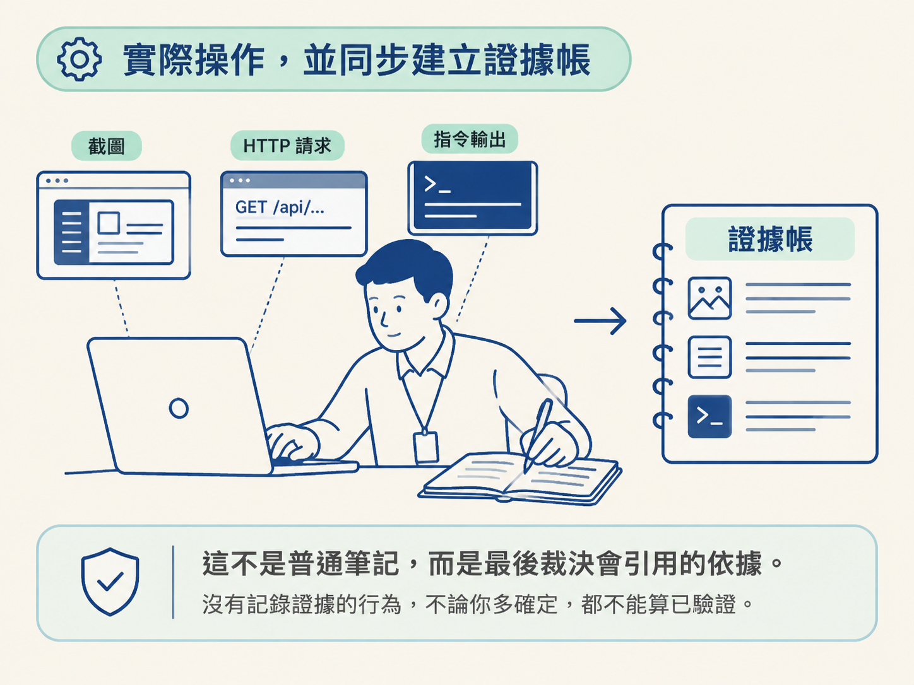
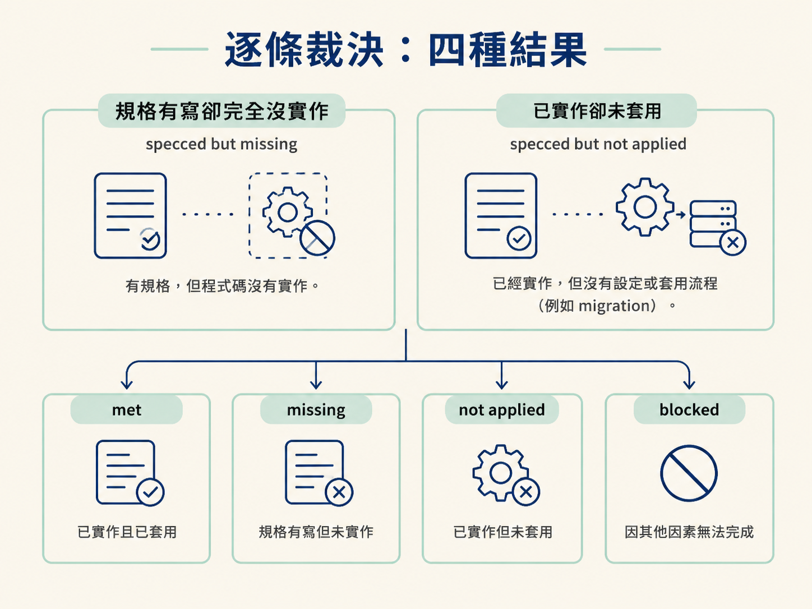
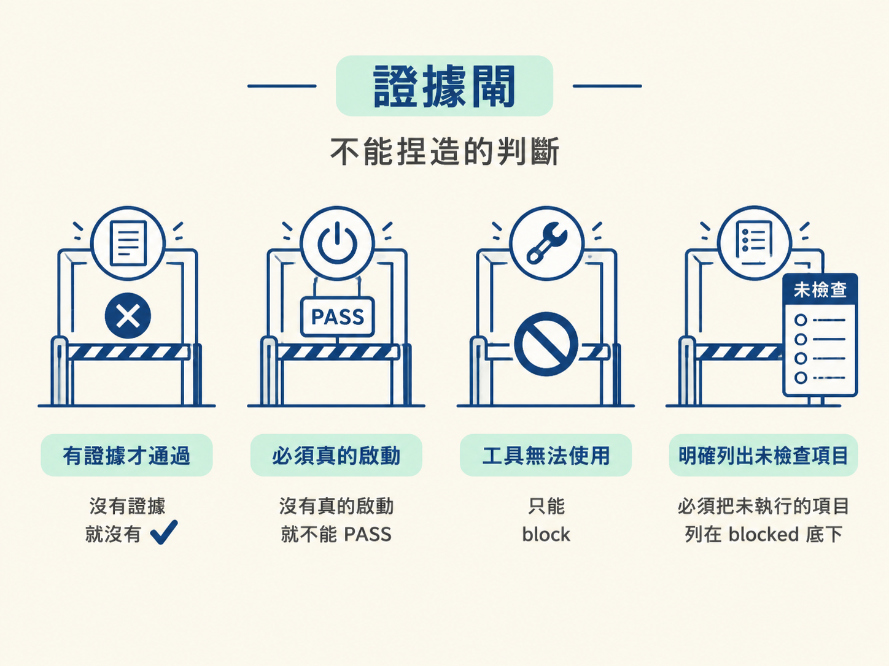

完成一輪 /check verify：把規格中的驗收條件轉成可觀察的行為，依照 build approach 校準「做到什麼才算會動」，實際啟動並操作應用，邊做邊記錄證據，最後用證據閘逐條做出 conformance 裁決。
想像你做了一個信箱驗證功能。程式碼寫好了，測試也補上了，指令一跑，畫面上一片綠色。你於是開了 PR，以為工作已經收尾。
直到有人真的點下「寄送驗證信」，信卻沒有寄出去。再查才發現：新增 verified_at 欄位的 migration 雖然寫好、也 commit 了，卻從來沒有在環境中執行。資料表裡根本沒有這個欄位。

測試全綠，只能證明「作者想到要測的那些程式碼」能通過測試。它不能證明欄位真的存在，也不能證明規格承諾的頁面真的建好了。/check verify 要補上的，正是「測試綠」與「功能真的會動」之間的縫隙。
它不靠閱讀程式碼來猜答案，而是把應用真正開起來，走過實際操作流程。
執行 verify 時，請採用驗收工程師的視角：相信親眼觀察到的行為，不要只相信綠色勾勾。這不是否定測試，而是承認測試有邊界。通過的測試套件，證明的是「作者以為需要測的東西」，不等於「規格承諾的功能真的存在」。
因此，verify 的做法很直接：
它可以看成 /test 的執行期對應物：/test 寫下的斷言，之後每次都能自動重跑；verify 則是這一次親自走過流程、確認現實。
驗證方式會隨改動性質改變。預設是 feature 模式：這次改動新增或改變了行為，所以要確認它真的完成了那件新工作。
另一種是 refactor / regression 模式：改動只是重構、去重或改名，預期行為應該保持不變。這時重點不是「程式有沒有動」，而是「動作是否完全一樣」。
refactor 模式會把「不變」轉成可證明的結果。它在同一個應用上分別執行改動前與改動後的版本，擷取兩次輸出並進行比對。
改動前的狀態，優先使用一次性的 git worktree 還原到改動前的 commit：在工作區建立一份乾淨舊版、啟動應用、逐一操作受影響的介面、保存原始輸出，接著拆掉 worktree。只有 worktree 無法使用時，才退回 git stash --include-untracked。
這裡一定要加上 --include-untracked，因為普通的 git stash 會把新增檔案留在原地，反而污染本來要代表「改動前」的環境。
兩份輸出要逐個介面比對。行為保持不變的改動，輸出應該位元組完全相同；只要出現差異，就先視為回歸，抓出精確差異後交給 /debug。
這種做法特別適合沒有測試框架的專案，因為它臨時搭出了一張安全網。由於必須同時保存前後兩份輸出，通常會在獨立的子代理裡執行，避免把主對話的 context 塞滿。
要驗收，先要知道「什麼叫做正確」。如果這次改動背後有一份規格，位置通常是 docs/specs/NNNN-<feature>/，那份規格就是驗收合約。
規格的 ## Requirements 段落會列出編號化的驗收條件，例如 AC-1、AC-2，也會寫明承諾要提供哪些介面：某個頁面、某條路由、某張資料表，或某支 migration。
載入順序如下：
verify.md。這通常是 /develop 產出的檢查清單，每一步都標示對應的 AC-N。verify.md，就退回規格的 ## Requirements，自行把每個 AC-N 轉成可觀察的檢查。這樣會得到兩份清單：
AC-N。檢查範圍不能縮成「只有有改動的檔案」。一個 AC 或介面完全沒有實作，正是這道閘應該抓到的漏。即使某個項目沒有對應的變更檔案，也要留在清單裡，讓最後的裁決明確指出它缺少什麼。
知道要確認什麼後，還要知道做到什麼程度才算通過。這由目前切片採用的 build approach 決定。
同一個功能，如果採用 Tracer Bullet，期待的是一條穿過各層的薄型端到端路徑；如果採用 Facade，可能只要求最小可用的核心迴圈。拿錯標準去量，就會把應該通過的項目判成失敗，或把還沒完成的項目誤判為通過。
build approach 的優先順序是：
AGENTS.md，或 scope 檔頭中的設定。幾個常見標準可以幫助校準：
可以用一句話記住分工：規格說「哪些事情必須為真」；build approach 說「目前後面的層要有多少是真的」。規格承諾要驗得嚴格，但不能拿仍被 build approach 允許暫時佔位的部分判定失敗。
接著要把抽象的「這次改動」翻成具體的觀察點。先找出 base 分支：有 main 就使用 main，不存在時使用 master。然後列出所有改動檔案，包括尚未 commit 的檔案。
如果有規格合約，就以 AC-N 與介面清單作為範圍。如果沒有，就從改動內容寫出二到五個人看著就能判斷的具體行為，例如：「/pricing 頁面渲染出三個方案，而且點擊 CTA 會開啟結帳流程。」
接著決定如何啟動應用。在 monorepo 裡，應該啟動受影響的那個應用，而不是直接在 repo 根目錄執行。根目錄通常沒有完整的啟動方式。
啟動指令依下列順序尋找：
AGENTS.md。package.json 裡的 dev 或 start。Makefile。Procfile。docker-compose。優先採用專案原本就在使用的方式。如果專案沒有明確說明，就依照類型套用內建模式：
如果真的無法判斷如何啟動，就向工程師詢問啟動指令，不要自行猜測。
啟動時優先使用背景程序，這樣可以一邊讓應用運作，一邊進行互動。如果環境允許，盡量使用連線工具，讓檢查更接近真實情境。
瀏覽器自動化工具可以真的導覽、點擊、輸入、送出與截圖；資料庫工具則可以直接查線上 schema，確認 migration 真的套用了，而不是只看程式碼猜測。
操作每個觀察行為時，重點是留下能證明結果的資料：
即使畫面看起來正常，也要查看 server 或主控台日誌，確認沒有錯誤或警告被吞掉。
這個流程最重要的習慣是：邊做邊記一份證據帳。每完成一個行為，就立刻保存能證明你確實操作過、也確實看到結果的資料。
證據帳可以包含：
這不是普通筆記，而是最後裁決會引用的依據。沒有記錄證據的行為，不論你多確定，都不能算已驗證。

操作完成後，把觀察結果整理成逐條判斷。如果載入了規格合約，就要對每一個 AC-N 與每一個承諾介面，給出以下四種結果之一。
| 結果 | 意思 | 下一步 |
|---|---|---|
| met ✅ | 檢查通過，或介面存在且行為符合規格 | 不用處理 |
| specced but missing 🚫 | 規格有寫，但完全沒有實作，根本沒有東西可跑 | 交給 /develop 建立 |
| specced but not applied ⚠️ | 程式碼存在，但執行期檢查失敗；典型例子是 migration 尚未套用 | 套用它 |
| blocked ⚠️ | 缺資料、憑證或環境，導致流程無法執行 | 說明需要補什麼 |
其中兩個結果很容易混在一起，但一定要分開報告，因為修法完全不同。
missing 是「從來沒有建出來」，屬於範圍或實作遺漏，要交給 /develop 補上。not applied 是「已經建好，但沒有生效」，例如程式碼寫好了，migration 卻還沒套用。
兩者都會阻止功能被視為完成，但分開描述後，負責修正的人才能知道要補的是實作，還是設定與套用流程。

整體 conformance 要判定為 PASS，條件很硬：每一個 AC-N 都必須是 met，每一個承諾的介面也都必須存在。只要有一個 missing 或 not applied，整體就是 FAIL，即使測試全數通過也一樣。
verify 的目的，是用「真的跑過」證明改動能運作。因此它有四條證據閘，必須照字面遵守。
第一，沒有證據，就沒有 ✅。要把行為標成 met，必須能引用證據帳裡對應的紀錄，例如指令與輸出、URL 與渲染結果、截圖路徑，或查詢與結果。引用不出來，就只能標成 blocked，不能標成 met。
第二，沒有真的啟動，就永遠不能 PASS。如果這一輪根本沒有啟動應用、沒有送出請求，也沒有實際執行任何指令，就不能對任何行為發出 PASS 或 ✅。此時每個行為都要報成 blocked，說清楚什麼沒有執行、原因是什麼，然後停止。
第三，工具用不了就是 block，不是 pass。沒有瀏覽器工具、沒有資料庫工具、缺少憑證，或 build 根本起不來，都會讓需要這些工具的行為變成 blocked。
「我看過程式碼，覺得應該沒問題」正是這個 skill 要防止的錯誤。程式碼看起來合理，不等於執行環境真的完成接線。
第四，要說出沒有檢查什麼。如果有些行為執行了，有些沒有，報告必須把未執行的項目列在 blocked 底下。一份只跑了一半卻宣稱全數通過的報告，比完全不跑更危險。

報告採用「先給結論，再列欠帳」的方式。開頭先寫裁決：PASS、FAIL 或 BLOCKED。接著只列出失敗或尚未處理的項目，通過項目不必逐條重複，因為完整紀錄已經在證據帳裡。
如果功能有對應的 scope 列，而且結果是 PASS，就勾起 Verify it。同時，把這次確實執行且通過的 verify.md 步驟逐格勾選；失敗或沒執行到的步驟則保持未勾選。
PASS 時，verify 只會建議你把功能標成 done，不會替你強制決定。如果 Verify it 是 Alpha 等級功能的最後一格，它會提示：「已驗證且通過，可以標成 done，也可以繼續。」最後由你決定。
如果後面還有 Test it 等格子，例如 Beta 或 GA 等級，verify 會建議下一步執行 /test；你也可以選擇直接標成 done 並跳過。FAIL 或 BLOCKED 時，則什麼都不勾，只把缺口說清楚。
收尾還有一個不能省略的動作：明確列出你在每個檔案中勾選或修改了什麼。例如：「scope：勾選 Verify it；spec：狀態改成 Accepted。」
如果找不到對應的 scope 列，要明確寫出「找不到符合的功能列」，不能默默結束。最後，清理這次啟動的程序。
整個 verify 只負責確認現實，不負責修正，也不負責把斷言永久留下：
/debug。/develop。/test。而捏造一個 PASS，是 verify 絕對不能產出的結果，因為後續每個階段都會信任這份判斷。
verify採用驗收工程師的立場：相信觀察，不相信綠色勾勾。它先載入規格合約，包括AC-N與承諾的介面，再依 build approach 校準「怎樣才算會動」，把改動轉成可觀察的行為，實際啟動應用並操作，同時建立證據帳。逐條裁決共有四種：met ✅、specced but missing 🚫、specced but not applied ⚠️、blocked ⚠️。證據閘也有四條：沒有證據就沒有 ✅、沒有啟動就不能 PASS、工具無法使用就只能 block，還要明確列出沒有檢查的項目。整體要 PASS，必須每個驗收條件都 met，且每個承諾的介面都存在。
verify 回答的是：「這個東西真的會動嗎？」但即使功能能運作，程式碼仍可能有錯誤處理缺口、安全漏洞或難以維護的寫法。這些問題不是 verify 的視角能看見的，必須換一雙眼睛。
下一節的 review，會請一個沒有寫過這段程式碼的模型來檢查它，找出原作者容易忽略的問題。